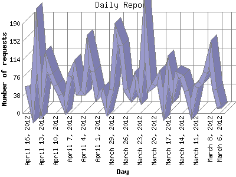

Analog 5.1
Analog 5.1 Report Magic 2.21
Report Magic 2.21The Daily Report identifies the activity for each day within the reporting period. Remember that one page hit can result in several server requests as the images for each page are loaded.

| Day | Number of requests | Number of page requests | |
|---|---|---|---|
| 1. | March 6, 2012 | 10 | 3 |
| 2. | March 7, 2012 | 50 | 3 |
| 3. | March 8, 2012 | 128 | 9 |
| 4. | March 9, 2012 | 86 | 7 |
| 5. | March 10, 2012 | 64 | 4 |
| 6. | March 11, 2012 | 56 | 11 |
| 7. | March 12, 2012 | 9 | 2 |
| 8. | March 13, 2012 | 48 | 3 |
| 9. | March 14, 2012 | 78 | 12 |
| 10. | March 15, 2012 | 82 | 13 |
| 11. | March 16, 2012 | 44 | 6 |
| 12. | March 17, 2012 | 93 | 12 |
| 13. | March 18, 2012 | 17 | 6 |
| 14. | March 19, 2012 | 78 | 7 |
| 15. | March 20, 2012 | 60 | 12 |
| 16. | March 21, 2012 | 52 | 12 |
| 17. | March 22, 2012 | 184 | 12 |
| 18. | March 23, 2012 | 43 | 12 |
| 19. | March 24, 2012 | 71 | 7 |
| 20. | March 25, 2012 | 35 | 4 |
| 21. | March 26, 2012 | 50 | 7 |
| 22. | March 27, 2012 | 144 | 4 |
| 23. | March 28, 2012 | 169 | 9 |
| 24. | March 29, 2012 | 50 | 16 |
| 25. | March 30, 2012 | 11 | 5 |
| 26. | March 31, 2012 | 45 | 6 |
| 27. | April 1, 2012 | 35 | 16 |
| 28. | April 2, 2012 | 89 | 7 |
| 29. | April 3, 2012 | 135 | 7 |
| 30. | April 4, 2012 | 44 | 7 |
| 31. | April 5, 2012 | 44 | 4 |
| 32. | April 6, 2012 | 98 | 9 |
| 33. | April 7, 2012 | 79 | 8 |
| 34. | April 8, 2012 | 15 | 7 |
| 35. | April 9, 2012 | 39 | 2 |
| 36. | April 10, 2012 | 59 | 10 |
| 37. | April 11, 2012 | 82 | 15 |
| 38. | April 12, 2012 | 110 | 13 |
| 39. | April 13, 2012 | 35 | 13 |
| 40. | April 14, 2012 | 156 | 12 |
| 41. | April 15, 2012 | 14 | 5 |
| 42. | April 16, 2012 | 58 | 7 |
Most active day September 27, 2011 : 125 pages sent. 184 requests handled.
Daily average: 8 pages sent. 67 requests handled.
This report was generated on April 16, 2012 16:56.
Report time frame March 29, 2011 03:27 to April 16, 2012 22:03.
| Web statistics report produced by: | |
| Analog 5.1 | Report Magic 2.21 |